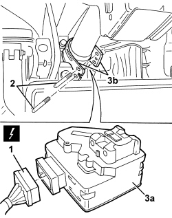

5580E17 STEERING LOCK - R.R
- Path
- Procedures > 55 ELECTRICAL EQUIPMENT > 5580 SPECIAL ACCESSORIES > 5580E ANTI-THEFT DEVICE > 5580E17 STEERING LOCK - R.R
- Kind
- repair procedure (removal / refitting; the operation number is the code)
- Applies to
- all engines; all production periods
- Interactive page
- https://sloeber94.github.io/elrnDB-aBrrSpdr/en/#/946002472
Applies to: all engines; all production periods
 Removing
Removing
 Refitting
Refitting- With the electronic key (TEG) inserted, disconect the battery. In this way, the steering lock remains disengaged.
1. Undo the bolts.
2. Remove the lower steering column trim.

Applies to: all engines; all production periods
1. Disconnect the electrical connection.
Description | Component |
|---|---|
STEERING LOCK CONTROL UNIT (NBS) |
2. Remove the shear bolts using a drift and mallet.
3. Remove steering lock device (3a) releasing it from brackets (3b).

Applies to: all engines; all production periods
Refitting
Removing- Check that the steering lock device is not damaged.
- Position the steering lock device in its seat.
- Screw in and tighten the new special bolts until the heads shear off.
- Connect the electrical connection.
- Position the lower steering column cover and tighten the fixing bolts.
- Check that the steering lock is working.
Topics linked from this page (1)
Topics that link to this page (163)
- H040 THE ELECTRIC STEERING LOCK DOES NOT RELEASE (VEHICLE WITH PASSIVE ENTRY)
- H041 STEERING DOES NOT LOCK WITH KEY EXTRACTED
- 5580ED ELECTRIC STEERING LOCK CHECK
- E1010 POWER SUPPLY SYSTEM - WIRING DIAGRAM
- E1010 POWER SUPPLY SYSTEM - COMPONENT LOCATION
- E1010 POWER SUPPLY SYSTEM - WIRING DIAGRAM
- E1010 POWER SUPPLY SYSTEM - COMPONENT LOCATION
- E1050 CAN CONNECTION LINES - WIRING DIAGRAM
- E1050 CAN CONNECTION LINES - COMPONENT LOCATION
- E1050 CAN CONNECTION LINES - WIRING DIAGRAM
- E1050 CAN CONNECTION LINES - COMPONENT LOCATION
- E1060 A-BUS SERIAL LINE - WIRING DIAGRAM
- E1060 A-BUS SERIAL LINE - COMPONENT LOCATION
- E2010 SIDE LIGHTS/NUMBER PLATE LIGHT - WIRING DIAGRAM
- E2010 SIDE LIGHTS/NUMBER PLATE LIGHT - COMPONENT LOCATION
- E2010 SIDE LIGHTS/NUMBER PLATE LIGHT - WIRING DIAGRAM
- E2010 SIDE LIGHTS/NUMBER PLATE LIGHT - COMPONENT LOCATION
- E2011 DIPPED HEADLIGHTS - WIRING DIAGRAM
- E2011 DIPPED HEADLIGHTS - COMPONENT LOCATION
- E2011 DIPPED HEADLIGHTS - WIRING DIAGRAM
- E2011 DIPPED HEADLIGHTS - COMPONENT LOCATION
- E2012 MAIN BEAM HEADLIGHTS - WIRING DIAGRAM
- E2012 MAIN BEAM HEADLIGHTS - COMPONENT LOCATION
- E2012 MAIN BEAM HEADLIGHTS - WIRING DIAGRAM
- E2012 MAIN BEAM HEADLIGHTS - COMPONENT LOCATION
- E2020 DIRECTION INDICATORS/HAZARD WARNING LIGHTS - WIRING DIAGRAM
- E2020 DIRECTION INDICATORS/HAZARD WARNING LIGHTS - COMPONENT LOCATION
- E2020 DIRECTION INDICATORS/HAZARD WARNING LIGHTS - WIRING DIAGRAM
- E2020 DIRECTION INDICATORS/HAZARD WARNING LIGHTS - COMPONENT LOCATION
- E2021 BRAKE LIGHTS - WIRING DIAGRAM
- E2021 BRAKE LIGHTS - COMPONENT LOCATION
- E2021 BRAKE LIGHTS - WIRING DIAGRAM
- E2021 BRAKE LIGHTS - COMPONENT LOCATION
- E2022 REVERSING LIGHTS - WIRING DIAGRAM
- E2022 REVERSING LIGHTS - COMPONENT LOCATION
- E2022 REVERSING LIGHTS - WIRING DIAGRAM
- E2022 REVERSING LIGHTS - COMPONENT LOCATION
- E2030 FOG LIGHTS - WIRING DIAGRAM
- E2030 FOG LIGHTS - COMPONENT LOCATION
- E2031 REAR FOG LAMPS - WIRING DIAGRAM
- E2031 REAR FOG LAMPS - COMPONENT LOCATION
- E2510 COURTESY LIGHTS - WIRING DIAGRAM
- E2510 COURTESY LIGHTS - COMPONENT LOCATION
- E2520 GLOVE COMPARTMENT LIGHT - BOOT LIGHT - SUN VISOR LIGHT - WIRING DIAGRAM
- E2520 GLOVE COMPARTMENT LIGHT - BOOT LIGHT - SUN VISOR LIGHT - COMPONENT LOCATION
- E2520 GLOVE COMPARTMENT LIGHT - BOOT LIGHT - WIRING DIAGRAM
- E2520 GLOVE COMPARTMENT LIGHT - BOOT LIGHT - COMPONENT LOCATION
- E2521 PUDDLE LIGHTS - WIRING DIAGRAM
- E2521 PUDDLE LIGHTS - COMPONENT LOCATION
- E2535 CONTROLS LIGHTING - WIRING DIAGRAM
- E2535 CONTROLS LIGHTING - COMPONENT LOCATION
- E3020 WINDSCREEN WASH/WIPE - WIRING DIAGRAM
- E3020 WINDSCREEN WASH/WIPE - COMPONENT LOCATION
- E3021 REARSCREEN WASH/WIPE WIRING DIAGRAM
- E3021 REARSCREEN WASH/WIPE COMPONENT LOCATION
- E3022 HEADLAMP WASHER - WIRING DIAGRAM
- E3022 HEADLAMP WASHER - COMPONENT LOCATION
- E3030 REAR SCREEN AND REAR VIEW MIRROR DEMISTING - WIRING DIAGRAM
- E3030 REAR SCREEN AND REAR VIEW MIRROR DEMISTING - COMPONENT LOCATION
- E3032 REAR VIEW MIRRORS ADJUSTMENT - WIRING DIAGRAM
- E3032 REAR VIEW MIRRORS ADJUSTMENT - COMPONENT LOCATION
- E3040 CENTRAL LOCKING - WIRING DIAGRAM
- E3040 CENTRAL LOCKING - COMPONENT LOCATION
- E3045 BOOT AND FUEL FLAP OPENING - WIRING DIAGRAM
- E3045 BOOT AND FUEL FLAP OPENING - COMPONENT LOCATION
- E3045 BOOT AND FUEL FLAP OPENING - WIRING DIAGRAM
- E3045 BOOT AND FUEL FLAP OPENING - COMPONENT LOCATION
- E3050 FRONT ELECTRIC WINDOWS - WIRING DIAGRAM
- E3050 FRONT ELECTRIC WINDOWS - COMPONENT LOCATION
- E3050 FRONT ELECTRIC WINDOWS - WIRING DIAGRAM
- E3050 FRONT ELECTRIC WINDOWS - COMPONENT LOCATION
- E3061 SLIDING BLIND ON ROOF - WIRING DIAGRAM
- E3061 SLIDING BLIND ON ROOF - COMPONENT LOCATION
- E3070 CIGAR LIGHTER/CURRENT SOCKET - WIRING DIAGRAM
- E3070 CIGAR LIGHTER/CURRENT SOCKET - COMPONENT LOCATION
- E3075 HEATED SEATS - WIRING DIAGRAM
- E3075 HEATED SEATS - COMPONENT LOCATION
- E3075 HEATED SEATS - WIRING DIAGRAM
- E3075 HEATED SEATS - COMPONENT LOCATION
- E3076 ELECTRICALLY ADJUSTABLE SEATS - WIRING DIAGRAM
- E3076 ELECTRICALLY ADJUSTABLE SEATS - COMPONENT LOCATION
- E3076 ELECTRICALLY ADJUSTABLE SEATS - WIRING DIAGRAM
- E3076 ELECTRICALLY ADJUSTABLE SEATS - COMPONENT LOCATION
- E3080 HEADLIGHT ALIGNMENT ADJUSTMENT - WIRING DIAGRAM
- E3080 HEADLIGHT ALIGNMENT ADJUSTMENT - COMPONENT LOCATION
- E3080 HEADLIGHT ALIGNMENT ADJUSTMENT - WIRING DIAGRAM
- E3080 HEADLIGHT ALIGNMENT ADJUSTMENT - COMPONENT LOCATION
- E3090 PARKING SENSOR - WIRING DIAGRAM
- E3090 PARKING SENSOR - COMPONENT LOCATION
- E3096 HOOD OPENING - WIRING DIAGRAM
- E3096 HOOD OPENING - COMPONENT LOCATION
- E3510 RADIO - WIRING DIAGRAM
- E3510 RADIO - COMPONENT LOCATION
- E3510 RADIO - WIRING DIAGRAM
- E3510 RADIO - COMPONENT LOCATION
- E3510 RADIO - WIRING DIAGRAM
- E3510 RADIO - COMPONENT LOCATION
- E3510 RADIO - WIRING DIAGRAM
- E3510 RADIO - COMPONENT LOCATION
- E3510 RADIO - WIRING DIAGRAM
- E3510 RADIO - COMPONENT LOCATION
- E3510 RADIO - WIRING DIAGRAM
- E3510 RADIO - COMPONENT LOCATION
- E3570 INTEGRATED RADIOPHONE - WIRING DIAGRAM
- E3570 INTEGRATED RADIO PHONE - COMPONENT LOCATION
- E3570 INTEGRATED RADIOPHONE - WIRING DIAGRAM
- E3570 INTEGRATED RADIO PHONE - COMPONENT LOCATION
- E3580 MOBILE PHONE WIRING - WIRING DIAGRAM
- E3580 MOBILE PHONE WIRING - COMPONENT LOCATION
- E4010 INSTRUMENT PANEL - WIRING DIAGRAM
- E4010 INSTRUMENT PANEL - COMPONENT LOCATION
- E4010 INSTRUMENT PANEL - WIRING DIAGRAM
- E4010 INSTRUMENT PANEL - COMPONENT LOCATION
- E4080 TRIP COMPUTER - WIRING DIAGRAM
- E4080 TRIP COMPUTER - COMPONENT LOCATION
- E4090 NAVIGATOR WIRING DIAGRAM
- E4090 NAVIGATOR COMPONENT LOCATION
- E4091 CONNECT - WIRING DIAGRAM
- E4091 CONNECT - COMPONENT LOCATION
- E5010 IGNITION AND RECHARGING - WIRING DIAGRAM
- E5010 IGNITION AND RECHARGING - COMPONENT LOCATION
- E5010 IGNITION AND RECHARGING - WIRING DIAGRAM
- E5010 IGNITION AND RECHARGING - COMPONENT LOCATION
- E5020 ENGINE COOLING - WIRING DIAGRAM
- E5020 ENGINE COOLING - COMPONENT LOCATION
- E5020 ENGINE COOLING - WIRING DIAGRAM
- E5020 ENGINE COOLING - COMPONENT LOCATION
- E5030 PETROL ENGINE ELECTRONIC MANAGEMENT - WIRING DIAGRAM
- E5030 PETROL ENGINE ELECTRONIC MANAGEMENT - COMPONENT LOCATION
- E5030 PETROL ENGINE ELECTRONIC MANAGEMENT - WIRING DIAGRAM
- E5030 PETROL ENGINE ELECTRONIC MANAGEMENT - COMPONENT LOCATION
- E5050 DIESEL ENGINE ELECTRONIC MANAGEMENT - WIRING DIAGRAM
- E5050 DIESEL ENGINE ELECTRONIC MANAGEMENT - COMPONENT LOCATION
- E5060 CRUISE CONTROL - WIRING DIAGRAM
- E5060 CRUISE CONTROL - COMPONENT LOCATION
- E5060 CRUISE CONTROL - WIRING DIAGRAM
- E5060 CRUISE CONTROL - COMPONENT LOCATION
- E5070 PARTICLE FILTER SYSTEM - WIRING DIAGRAM
- E5070 PARTICLE FILTER SYSTEM - COMPONENT LOCATION
- E6020 AIR CONDITIONER - WIRING DIAGRAM
- E6020 AIR CONDITIONER - COMPONENT LOCATION
- E7010 CODE - WIRING DIAGRAM
- E7010 CODE - COMPONENT LOCATION
- E7015 ALARM - WIRING DIAGRAM
- E7015 ALARM - COMPONENT LOCATION
- E7015 ALARM - WIRING DIAGRAM
- E7015 ALARM - COMPONENT LOCATION
- E7022 VDC - WIRING DIAGRAM
- E7022 VDC - COMPONENT LOCATION
- E7030 AIR BAG - WIRING DIAGRAM
- E7030 AIR BAG - COMPONENT LOCATION
- E7030 AIR BAG - WIRING DIAGRAM
- E7030 AIR BAG - COMPONENT LOCATION
- E7030 AIR BAG - WIRING DIAGRAM
- E7030 AIR BAG - COMPONENT LOCATION
- E7051 ROBOTIZED GEARBOX - WIRING DIAGRAM
- E7051 ROBOTIZED GEARBOX - COMPONENT LOCATION
- E7050 AUTOMATIC TRANSMISSION - WIRING DIAGRAM
- E7050 AUTOMATIC TRANSMISSION - COMPONENT LOCATION
- E7065 ELECTRIC STEERING LOCK - WIRING DIAGRAM
- E7065 ELECTRIC STEERING LOCK - COMPONENT LOCATION
- E8010 MULTIPLE DIAGNOSTIC CONNECTOR - WIRING DIAGRAM
- E8010 MULTIPLE DIAGNOSTIC CONNECTOR - COMPONENT LOCATION